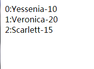

基础
Vue.js是当下很火的一个MVVM库，Vue.js是数据驱动的，你无需手动操作DOM。它通过一些特殊的HTML语法，将DOM和数据绑定起来。一旦你创建了绑定，DOM将和数据保持同步，每当变更了数据，DOM也会相应地更新。
安装
1.直接<script>引入，开发版;生产版;
2.命令行工具(CLI)1
2
3
4
5
6
7
8# 全局安装 vue-cli
$ npm install --global vue-cli
# 创建一个基于 webpack 模板的新项目
$ vue init webpack my-project
# 安装依赖，走你
$ cd my-project
$ npm install
$ npm run dev
hello vue 示例
浏览器上显示hello vue1
2
3
4
5
6<!--View-->
<div id="app">
<!--数据双向绑定-->
<p>{{message}}</p>
<input type="text" v-model='message'>
</div>
1 | //Model |
常用指令
v-if指令
以下示例每行显示一个‘yes’，共显示三行；不显示时不占用空间。把一个<template>元素当做包装元素，并在上面使用 v-if可以渲染多个元素，最终的渲染结果不会包含<template>元素。1
2
3
4
5
6
7
8
9
10
11<div id="app">
<h1 v-if=true>yes</h1>
<h1 v-if=false>no</h1>
<h1 v-if=vIf>yes</h1>
<h1 v-if=true>yes</h1>
<template v-if="false">
<h1>Title</h1>
<p>Paragraph 1</p>
<p>Paragraph 2</p>
</template>
</div>
1 | var vm = new Vue({ |
v-show指令
带有v-show的元素始终会被渲染并且保留在DOM中,只是改变了元素的display值;而v-if则是值为true时才渲染.
如果需要频繁的切换,则使用v-show比较好,如果在运行时条件不太改变,则使用v-if比较好.1
2
3
4
5<div id="app">
<h1 v-show="yes">yes</h1>
<h1 v-show="no">no</h1>
<h1 v-show="age > 20">age</h1>
</div>
1 | var vm = new Vue({ |

v-else指令
v-else元素必须立即跟在v-if元素的后面——否则它不能被识别。1
2
3
4
5
6
7
8
9
10
11
12
13
14
15
16
17
18<div id="app">
<h6 v-if="age >= 25">Age: {{ age }}</h6>
<h6 v-else>Name: {{ name }}</h6>
<h6>--------------分割线--------------</h6>
<!--v-else-if,2.1.0新增,充当 v-if 的“else-if 块”。可以链式地使用多次：-->
<div v-if="type === 'A'">
A
</div>
<div v-else-if="type === 'B'">
B
</div>
<div v-else-if="type === 'C'">
C
</div>
<div v-else>
Not A/B/C
</div>
</div>
1 | var vm = new Vue({ |
以上示例显示：
age >= 25表达式的结果为false，所以不显示年龄，而显示name；
v-for指令
v-for在组件中的运用之后再进行说明
当v-for和v-if处于同一节点， v-for 的优先级比 v-if 更高，这意味着 v-if 将分别重复运行于每个 v-for 循环中。当你想为仅有的 一些 项渲染节点时，这种优先级的机制会十分有用。
基本用法
第二个可选参数为当前的索引1
2
3
4<div v-for="(item, index) in people">
{{index}}:{{item.name}}-{{item.age}}
</div>
<!--同v-if模板,也可以用带有v-for的<template>标签来渲染多个元素块。-->
1 | var vm = new Vue({ |

对象迭代
可以用 v-for 通过一个对象的属性来迭代。1
2
3<div v-for="(value, key, index) in object">
{{index}}. {{key}} : {{value}}
</div>
1 | var vm = new Vue({ |

整数迭代
1 | <div v-for="n in even(numbers)">{{n}}</div> |
1 | var vm = new Vue({ |
数组更新检测:
变异方法
会改变被这些方法调用的原始数组,触发视图更新
push() //vm.people.push({name:’222’,age:5})
pop()
shift()
unshift()
splice()
sort()
reverse()
非变异方法
不会改变原始数组，但总是返回一个新数组当使用非变异方法时，可以用新数组替换旧数组：1
2
3example1.items = example1.items.filter(function (item) {
return item.message.match(/Foo/)
})
注意事项:
由于 JavaScript 的限制， Vue 不能检测以下变动的数组：
当你利用索引直接设置一个项时，例如： vm.items[indexOfItem] = newValue
当你修改数组的长度时，例如： vm.items.length = newLength
为了解决第一类问题，以下两种方式都可以实现和 vm.items[indexOfItem] = newValue相同的效果， 同时也将触发状态更新：Vue.set
Vue.set(example1.items, indexOfItem, newValue)
Array.prototype.splice
example1.items.splice(indexOfItem, 1, newValue)
为了解决第二类问题，你可以使用 splice：
example1.items.splice(newLength)
v-bind指令
绑定html class
可以传给 v-bind:class 一个对象，以动态地切换 class 。
上面的语法表示 active 的更新将取决于数据属性 isActive 是否为真值 。1
2
3<div class="static"
v-bind:class="{ active: isActive, 'text-danger': hasError }">
</div>
也可以直接绑定数据里的一个对象：1
<div v-bind:class="classObject"></div>
1 | data: { |
也可以在这里绑定返回对象的计算属性。这是一个常用且强大的模式：1
<div v-bind:class="classObject"></div>
1 | data: { |
数组语法:v-bind:class="[activeClass, errorClass]"
对象语法:v-bind:class="[{ active: isActive }, errorClass]"
绑定内联样式
对象语法:
1 | <div v-bind:style="styleObject"></div> |
1 | data: { |
数组语法
v-bind:style 的数组语法可以将多个样式对象应用到一个元素上：1
<div v-bind:style="[baseStyles, overridingStyles]">
自动添加前缀
当 v-bind:style 使用需要特定前缀的 CSS 属性时，如 transform ，Vue.js 会自动侦测并添加相应的前缀。
v-on指令
完整语法
1 | <button v-on:click="greet">Greet</button> |
缩写语法
1 | <button @click="greet">Greet</button> |